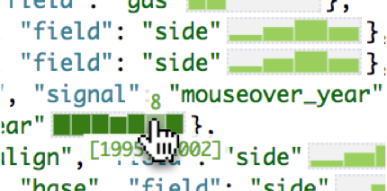
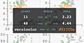

I am a fourth year PhD student in the Paul G. Allen School of Computer Science & Engineering at the University of Washington. I am advised by Jeffrey Heer and conduct research in the Interactive Data Lab. I received my undergraduate degree in Computer Science from Harvey Mudd College. I am interested in how developers write and understand their software, and how visualization techniques can be applied to improve program understanding, debugging, and authoring. Here is a sample of the work I have done:
Recent Publications

Augmenting Code with In Situ Visualizations to Aid Program Understanding.
Jane Hoffswell, Arvind Satyanarayan, Jeffrey Heer.
ACM Human Factors in Computing Systems (CHI), 2018.
|
PDF
|
BibTeX

Supporting Patient-Provider Collaboration to Identify Individual Triggers using Food and Symptom Journals.
Jessica Schroeder, Jane Hoffswell, Chia-Fang Chung, James Fogarty, Sean Munson, Jasmine Zia.
ACM Computer-Supported Cooperative Work (CSCW), 2017.
|
PDF
|
BibTeX

Visual Debugging Techniques for Reactive Data Visualization.
Jane Hoffswell, Arvind Satyanarayan, Jeffrey Heer.
Eurographics Conference on Visualization (EuroVis), 2016.
|
PDF
|
BibTeX
And more...